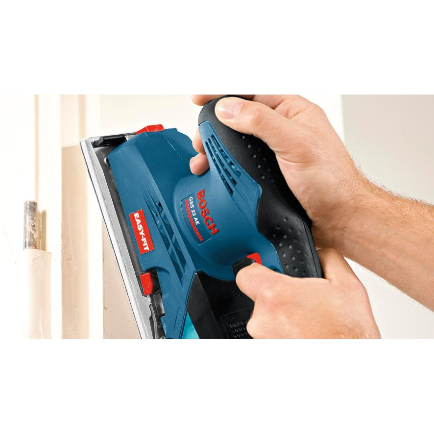
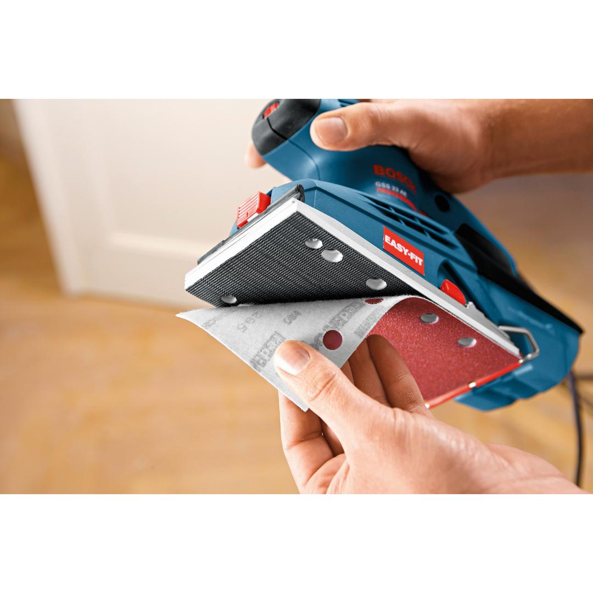
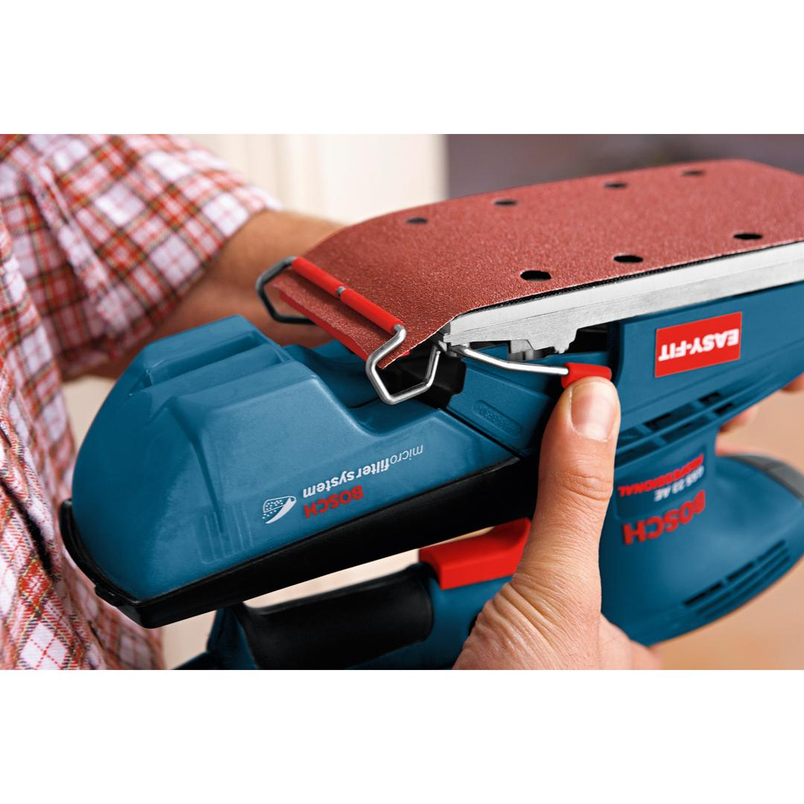
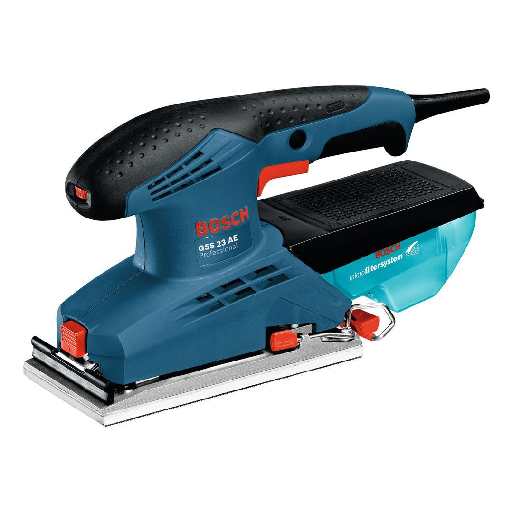
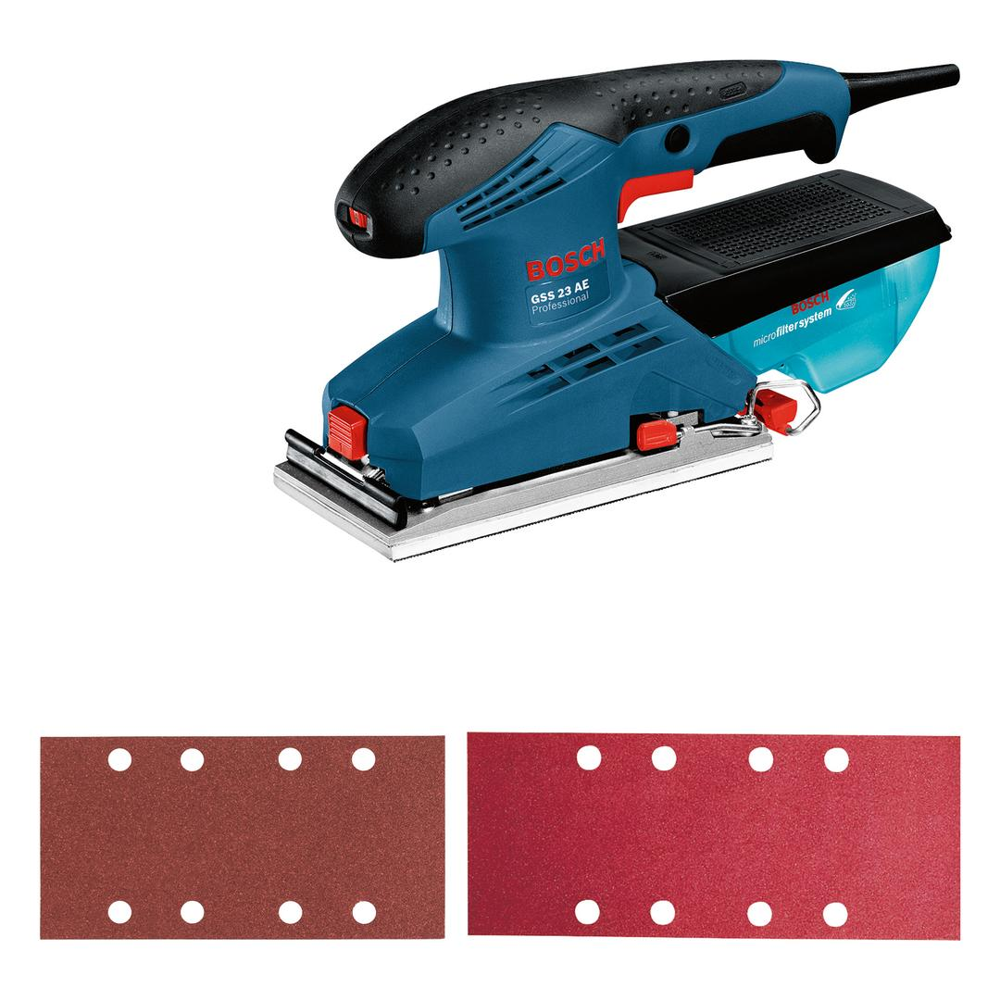

0601070700





| Rated input power |
190 W |
| No-load speed |
7,000 – 12,000 rpm |
| No-load orbital stroke rate |
14,000 – 24,000 opm |
| Orbit diameter |
2.0 mm |
| Weight |
1.700 kg |
| Tool dimensions (width) |
98 mm |
| Tool dimensions (length) |
318 mm |
| Tool dimensions (height) |
158 mm |
| Voltage, electrical |
230 V |
The reliable, entry-level orbital sander for multiple sanding applications in the 230-mm category
The GSS 23 AE Professional is Bosch's reliable, entry-level corded orbital sander for multiple sanding applications in the 230-mm category. A robust design with a reinforced clamping system provides durability for the highest tool lifetime. Speed selection enables multi-material applications. It also features a hook-and-loop pad and a tension system for an easy and perfect fit for sanding sheets.
It is intended for sanding, in-between sanding, and frame sanding as well as for surface finishing. This orbital sander is applicable on wood, veneer, lacquer, and filler, as well as mineral, and acrylic. It is compatible with the Bosch Click & Clean dust extraction system.
The GSS 23 AE also features a dust box with a built-in Bosch Micro Filter System, as well as a soft grip for comfortable handling.